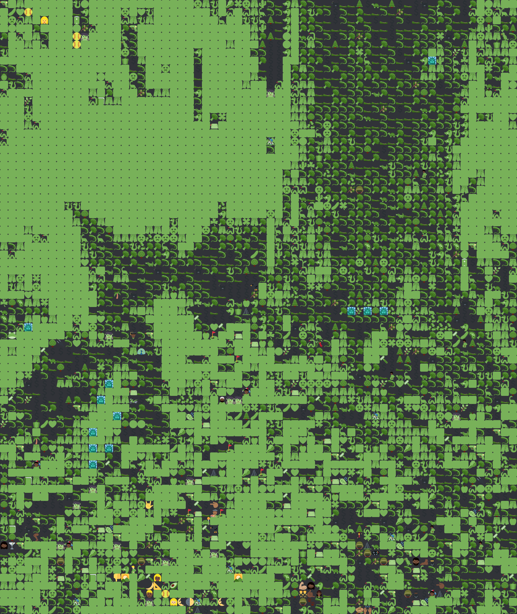

This page serves as an overview of how Emoji Mosaic works with example output.
As the name sugguests, Emoji Mosaic is a tool that I created for turning images into Mosaics of Emoji. One of the main focuses of the project was making sure that the color was as close as possible and the edges of shapes, where possible, was defined at a smaller scale than just 1 emoji. By that I mean; if, for example, the left side of an emoji pixel is red, then an emoji with red on the left of it should be chosen if possible. By achieving this, a high fidelity can be achieved with relative low emoji resolution.
Because not all tasks are the same, I've provided a few different modes for output. To demonstrate them, I'll use a few different example images. Here are the example images I'll be using:
The main (and, in my opinion best) mode is the one I've dubbed 'Insane' (because it's insanely slow, but gives insanely good results). It technically has a setting where if 'Dither' is unchecked, it will work slightly differently, but it seems to be worse most, if not all, of the time. Here are each of the test images using the Insane setting with 'Dither' checked:

You might notice that the color is very flat in some areas, for example in most of this part of test image 3:
That's due to the algorithm trying to find the best match for the percieved color, but there aren't any emoji with a brighter green than that. As a result, the color gamut is significantly reduced. Other than adding brighter colored emoji, the best way to get around this might just be to limit the color space, which is what the 'Normalize color' setting is for. This is what that gives:
That comes with significant down sides though. By limiting the color space, that makes it so output has a more muted look to it; though in the above example, that was unavoidable. As another example, here's the 3rd test image at 256 pixels without and with 'Normalize color':
As illustrated, the color normalized version is able to show detail that is clipping in the unnormlized version, but at the cost of less overall saturation.
So far, I've been focusing on the 'Insane' mode, since I think it's the best one, but there are a few others. The other ones are significantly faster, but, in most cases, seem to give worse results. Here are some example images for the other settings:
The algorithm employed is not super efficient. For ever position, it checks how close every possible emoji is.
In the case of Insane, it does so for every position without making any decisions, and then chooses the one emoji in the image that is closest to what it should be. It then diffuses the error to the neighboring positions and re-checks every emoji for those neighbors, and goes back to choosing the position with the least error.
For all of the others, it goes in reading order assigning the closest emoji for a given position and then (exepct for in 'none' mode) diffuses the error to the neighboring positions. The Dither and Smooth settings modify how the error gets diffused.
Before anything is done, though, the entire image (and all emoji) are converted into CIELAB which makes the color distance calculations perceptually accurate. Without doing that, the colors would likely look significantly off in some cases and the brightness would be significantly skewed. For a deeper look into color, see this other article of mine.